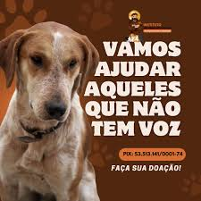

Consequências do Abandono
- *Abandono é crime. Amor é atitude..
- *A coleira é um laço de responsabilidade, não de conveniência.
- *O amor não se joga fora. A responsabilidade é para sempre.
Você pode ajudar adotando um amigo
Se não pode ter um animal, ajude de outras formas:
- Denuncie:*Em caso de abandono ou maus-tratos.
- Apoie ONGs:* Doe ração, medicamentos ou tempo como voluntário.
- Adote:*Prefira a adoção responsável em vez de comprar.